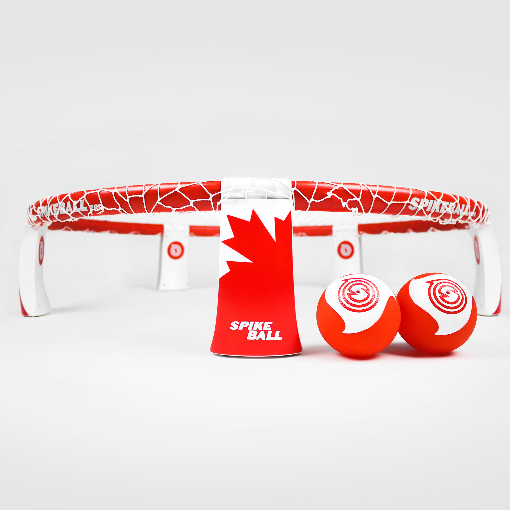
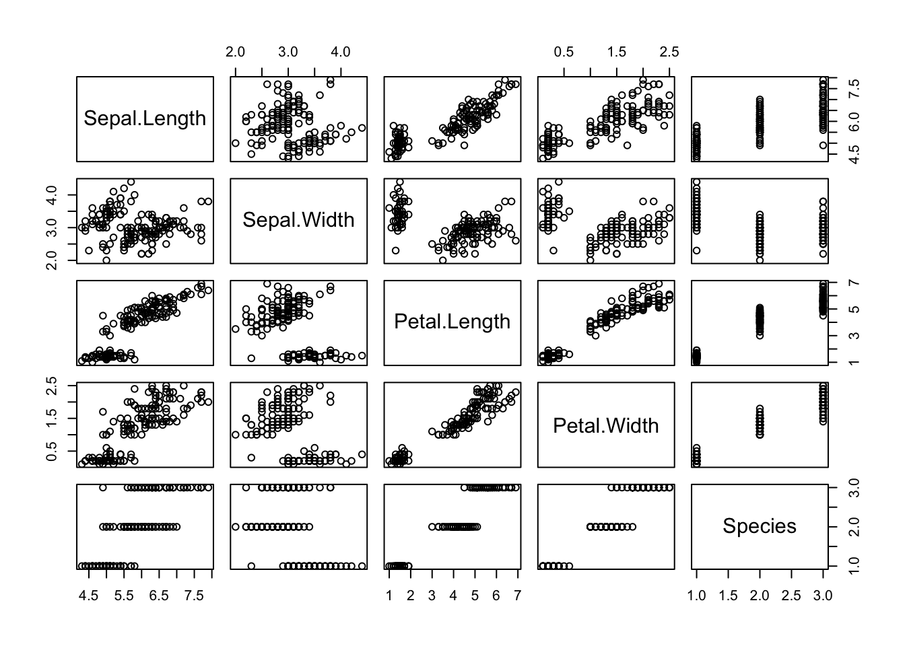

![]()
For my first ever blog post, I’ve decided to write about something that’s near and dear to my heart; Spikeball.
234567
45678
In 2018 I began working with Freestyle skiers. Well actually, that’s not entirely true. I began working with Freestyle skiers in 2015. Mogul skiers to be specific. hard working ,traditional yada yada
But back to 2018, this is when I started working with Freestyle skiers, perhaps in a more true sense of the word. While this group was undoubtedly composed of some of the most outstanding athletes I’ve ever seen, they were a bit hesitant to welcome someone transitioning from the more serious world of Mogul skiing, to the more laid back world of halfpipe skiing. It was clear I had a lot of work ahead of me if I wanted to infiltrate the cool kids and spread the gospel of an important warm up.
So after a semi-demoralizing camp, where a good day consisted of some mini-band work in the parking lot, and an average day meant strapping up the ski boots and strolling over to the oh-so-comfortable chair lift, I knew I had to do something.
(Albaladejo-Saura et al. 2021; Alentorn-Geli et al. 2009)
knitr::kable(
mtcars[1:6, 1:10]
)| mpg | cyl | disp | hp | drat | wt | qsec | vs | am | gear | |
|---|---|---|---|---|---|---|---|---|---|---|
| Mazda RX4 | 21.0 | 6 | 160 | 110 | 3.90 | 2.620 | 16.46 | 0 | 1 | 4 |
| Mazda RX4 Wag | 21.0 | 6 | 160 | 110 | 3.90 | 2.875 | 17.02 | 0 | 1 | 4 |
| Datsun 710 | 22.8 | 4 | 108 | 93 | 3.85 | 2.320 | 18.61 | 1 | 1 | 4 |
| Hornet 4 Drive | 21.4 | 6 | 258 | 110 | 3.08 | 3.215 | 19.44 | 1 | 0 | 3 |
| Hornet Sportabout | 18.7 | 8 | 360 | 175 | 3.15 | 3.440 | 17.02 | 0 | 0 | 3 |
| Valiant | 18.1 | 6 | 225 | 105 | 2.76 | 3.460 | 20.22 | 1 | 0 | 3 |
So on our next training camp, when we rolled up to the parking lot with no sufficient warm-up area in sight, I pulled the black and yellow bag out of the truck and started assembling what looked to the athletes like a mini-trampoline. A few of them knew what it was, and were cautiously enthused, and a few others ranged in feeling from skeptical to embarrassed.

plot(cars)
plot(iris)
plot(pressure)


References
Citation
@online{kates2024,
author = {Andrew Kates},
editor = {},
title = {Why Warm up When You Can Play {Spikeball?}},
date = {2024-08-13},
url = {https://samanthacsik.github.io/posts/2022-10-24-my-blog-post/},
langid = {en}
}